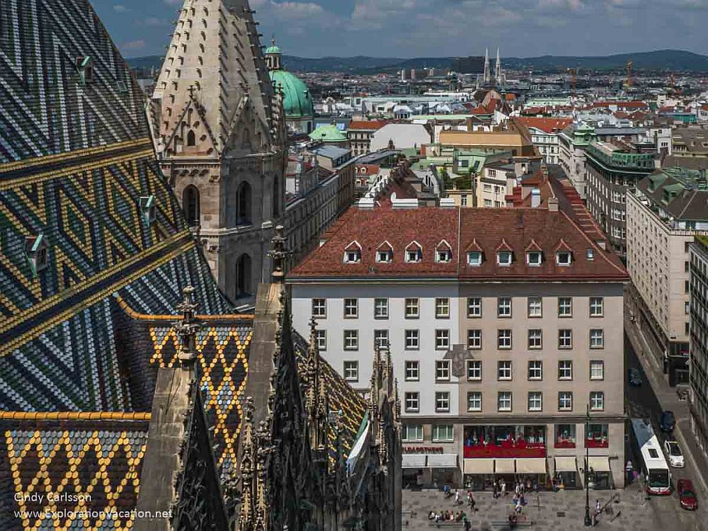

Choose Your Urban Adventure
From food walks to historic neighborhood explorations

Vienna's Historic Center
Explore Vienna's UNESCO-listed historic center with a local historian. Discover hidden courtyards and stories behind the grand architecture.

Budapest Market Tour
Taste your way through Budapest's Great Market Hall with a food writer. Sample Hungarian specialties and learn culinary traditions.

Prague Castle Quarter
Self-guided audio tour through Prague's Castle District. Explore at your own pace with stories from a local architect.

Private Berlin Highlights
Customizable private tour of Berlin's must-see sites with a local guide. Perfect for families or those wanting a personalized experience.

Lisbon's Hidden Alfama
Discover secret viewpoints and local haunts in Lisbon's oldest neighborhood with a lifelong resident as your guide.

Roman Street Food Tour
Evening tour of Rome's best street food spots with a local food blogger. Taste authentic supplì, pizza al taglio, and gelato.